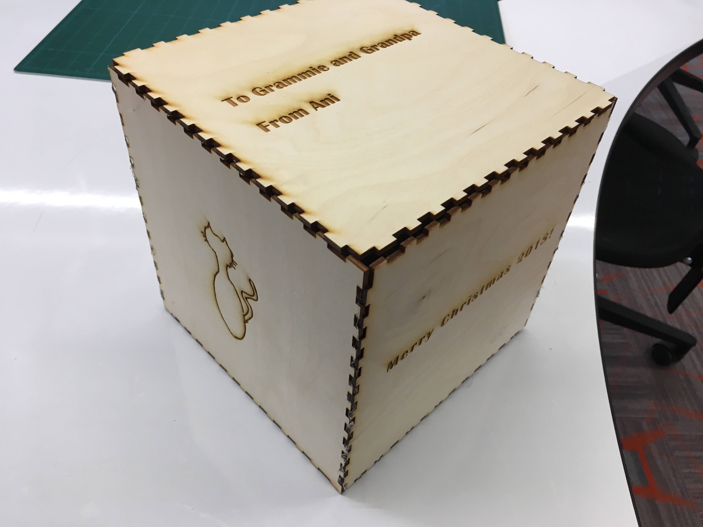
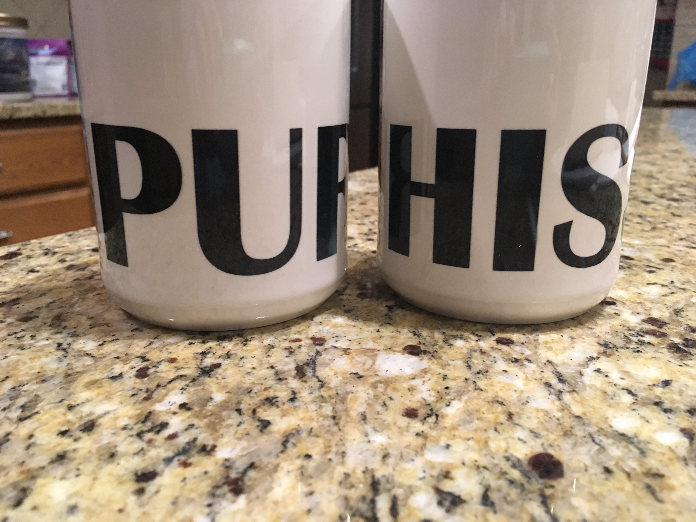

Final Project
6 - 13 December 2018
Because Christmas is coming up, I decided to make a present for my grandparents as my final project. They love cats, and although
they currently only have two, they have had many, many cats. I decided to create a gift box with a number of different cat-themed
items.

The first thing I had to make was the box itself. I drew out a picture of a cat, then used
MakerCase to create the design for my box.
I used CorelDRAW to design my box, put my cat picture on my box, and add text. Then, I
cut my 8 inch by 8 inch by 8 inch box on 1/8 inch wood in the Epilog Fusion Lasercutter. Since I was using wood, my raster (engraving,
as opposed to cutting) settings were 40/100 (Speed/Power), and my vector (cutting) settings were 8/100/20 (Speed/Power/Frequency).
Once my box pieces were cut out, I used a hot glue gun to glue all the pieces together, except the top, which I left unglued
so it could be opened. This entire process took me between 90 and 120 minutes, including cutting and gluing.

I am fairly satisfied with how my box turned out. Because the wood piece I was cutting on was almost exactly the same size as my
design, I had some troubles with one edge being cut a little strangely, but a little bit of hot glue covers up that flaw very well.
Box Files
Box File for 3 of the Sides
Box File for the Other 3 Sides


The next things I made were the coffee mugs. I selected a picture of Bonnie for the first coffee mug, which reads "Purrs," and I
found a picture of Clyde and Willie for the second coffee mug, with reads "Hiss." To make these mugs, I used CorelDRAW to create
the files and flip the images. Then, I printed the images on the Sawgrass sublimation printer. From there, I wrapped the images
around the mugs and taped them down. I wrapped the whole thing in plain printer paper, then put it in the special mug heat press
for 4 minutes. After that, I peeled off the images and put the mugs into lukewarm water for 5 - 10 minutes to help the images set.
The entire process took me 30 - 45 minutes.
.JPG)

I am very satisfied with how my coffee mugs turned out. I really like the pictures I chose, and I think my coffee mugs are
very clever. I would not change a thing - they look very nice.